Materi Rapat Dewan Gubernur Bulanan Hari II
Jakarta, 21 Mei 2025
PEREKONOMIAN TERKINI, PROSPEK, DAN ARAH KEBIJAKAN
Kesimpulan Diskusi Hari I dan Arahan ADG – Mei 2025
MONETER
KESIMPULAN
- Dampak tarif resiprokal AS perlu terus ditakar, meskipun terjadi kesepakatan temporer AS-Tiongkok. Kesepakatan meningkatkan prospek PDB dan inflasi global yang lebih baik. Timing penurunan FFR 2025 mundur, sedangkan yield UST naik akibat risiko fiskal. Arus modal global ke safe haven asset berlanjut, dan mulai mengalir ke EM, shg DXY rendah dan ADXY menguat.
- PDB tw I’25 turun terutama akibat kontraksi fiskal yg berlanjut di tw II’25 & baru ekspansif di Sem II’25, sementara prospek investasi bangunan rendah. Secara keseluruhan stimulus fiskal lebih rendah shg PDB 2025 turun menjadi 4,85% (yoy).
- Rupiah menguat seiring meredanya ketidakpastian pasar keuangan global. Momentum penguatan kurs perlu terus dijaga karena positif untuk perekonomian: pertumbuhan ekonomi membaik, inflasi rendah, fiskal membaik, B/S korporasi dan SSK terjaga.
- Inflasi 2025 lebih rendah krn PDB lemah, belanja MBG lebih kecil, kurs apresiatif, ekspektasi terjaga, dan harga minyak lebih rendah.
- Bauran kebijakan moneter diarahkan menjaga stabilitas dan mendukung perekonomian, melalui (i) kalibrasi kebijakan moneter akomodatif dengan penurunan suku bunga dan ekspansi likuiditas, Ekspansi likuiditas lebih banyak dilakukan melalui pembelian SBN krn dapat menurunkan persaingan suku bunga perbankan, dan mengurangi preferensi bank terhadap SBN, (ii) upaya menjaga momentum penguatan rupiah melalui strategi smart intervention dg tetap menjaga kecukupan cadev.
ARAHAN
- DKEM memperdalam proyeksi investasi bangunan dan hubungannya dengan impor.
- DKEM menyesuaikan asumsi NT tw.II’25 dan tw.III’25 dan dampaknya terhadap prospek perekonomian serta menjaga konsistensi dengan TSNT.
- DKEM menyesuaikan perhitungan program moneter yg konsisten dg prospek ekonomi dan ditempuh utamanya melalui pembelian SBN.
- DKEM menyesuaikan kisaran proyeksi PDB 2025 dg tetap mempertimbangkan upaya menjaga optimisme.
- DInt menyusun strategi komunikasi terkait dengan aktivasi LCBSA yang dapat mempengaruhi persepsi lembaga pemeringkat.
SP PUR
KESIMPULAN
- Velositas transaksi SP terus meningkat, baik dari sisi nilai maupun volume, didorong inisiatif digitalisasi. Velositas perputaran uang yang semakin tinggi diharapkan mampu mendorong perekonomian, meski belum terefleksi sepenuhnya pada velositas pendapatan. Perkembangan transaksi SP sejalan dg PDB Q1-2025 yg banyak diarahkan pada belanja retail, transaksi pemerintah, dan transaksi eksportir. Digitally Delivered Services Export (DDSE) perlu terus didorong sbg new sources of growth. Sejumlah inisiatif BI terkait inovasi (BIDIC, Hackathon) dan SP digital cross-border (QRIS antarnegara, Nexus) mendukung DDSE.
- Struktur SP tetap dalam tren membaik tecermin pada interkoneksi yang stabil dan interkoneksi SNAP yang meningkat. Integrasi pengguna SNAP terus didorong secara intensif dan persisten untuk memperkuat interkoneksi dan meminimalkan risiko interkoneksi yg belum memenuhi standar SNAP.
- Stabilitas infrastruktur terus terjaga. Availability sistem BI-RTGS terjaga di tengah risiko kerentanan likuiditas di BI-RTGS yang meningkat. Indikator TOR dan TOR Adjusted menunjukkan tren peningkatan yang dipengaruhi oleh tren penurunan saldo awal. Dari sisi pengedaran uang tunai, Posisi Kas Siap Edar (PKSE) secara nasional dan spasial berada pada level yang cukup untuk mendukung kebutuhan transaksi masyarakat.
ARAHAN
- Mempercepat implementasi program transformasi SP sesuai BSPI 2030 dan melaporkan progress dari 3 (tiga) program prioritas dalam RDG Bulanan.
- Mendalami peningkatan penggunaan Buy Now Pay Later (BNPL) pada platform e-commerce berdasarkan kategori barang dan PSP.
- Menjajaki perluasan kerjasama cross border payment dengan Kerajaan Arab Saudi.
MAKROPRUDENSIAL
KESIMPULAN
- Kredit April 2025 tumbuh moderat sebesar 8,88% (yoy). Penurunan pertumbuhan kredit disebabkan oleh faktor demand yg terbatas dan faktor supply yang menghadapi tantangan pendanaan, terutama yg bersumber dari DPK, yg pada April 2025 tumbuh lebih rendah sebesar 4,55% (yoy). Outlook pertumbuhan kredit 2025 termoderasi, diprakirakan berada pada kisaran 8-11%, lebih rendah dari kisaran sebelumnya 11-13%.
- Prospek demand kredit 2025 tertahan. Kinerja korporasi masih baik, terutama ditopang oleh a.l korporasi sektor Pertanian. Ke depan, demand korporasi berpotensi tertahan akibat dampak negatif dinamika global dan domestik. Namun, masih terdapat peluang demand di sektor yg terdampak positif dari trade diversion, forward global value chain, dan program Asta Cita Pemerintah.
- Dari sisi supply, bank Growth Driver berpeluang melanjutkan realokasi alat likuid didukung upaya mempertahankan CASA sbg sumber utama pendanaan bank. Bank dengan AL/DPK tinggi juga memiliki peluang relokasi alat likuid. Perlu diwaspadai peningkatan kompetisi dalam pendanaan yang ditandai oleh Suku Bunga DPK Special Rate yg masih tinggi shg meningkatkan Cost of Fund (CoF) dan menekan profitabilitas perbankan, serta berpotensi menghambat penyaluran kredit.
- Ketahanan sistem keuangan tetap kuat. Likuiditas agregat perbankan stabil (AL/DPK 25,23%), pemodalan kuat (CAR 25,38%), dan risiko kredit terjaga rendah di bawah 5%. Perlu dicermati risiko kredit masyarakat yg meningkat pd Kredit Multi Guna (KMG) dan paylater yg didominasi masy. kelas bawah.
- Pembiayaan inklusif tumbuh rendah (2,60%), a.l disebabkan daya beli RT kls bawah dan appetite perbankan yg masih lemah.
- Kebijakan makroprudensial longgar akan terus diperkuat untuk mendorong supply pembiayaan perbankan dengan tetap menjaga ketahanan SSK.
ARAHAN
- Melakukan re-asesmen outlook pertumbuhan kredit; termasuk mid-point serta kisaran target berdasarkan kondisi makro terkini.
- Mengusulkan respon kebijakan makroprudensial dg prinsip Authority, Controllability, dan Impact (ACI) dg fokus mendorong supply pembiayaan perbankan: RPLN, PLM, dan KLM.
Agenda Pembahasan
- Kesimpulan dan Tindak Lanjut RDG Mei Hari I
- Bauran Kebijakan – Mei 2025
- Usulan Rekomendasi Bauran Kebijakan
- Asesmen Ekonomi dan Moneter
- Asesmen Makroprudensial
- Asesmen Sistem Pembayaran
DKEM – DKMP - DKSP
ASESMEN EKONOMI DAN MONETER
DEPARTEMEN KEBIJAKAN EKONOMI DAN MONETER
#1. Prospek ekonomi global membaik seiring kesepakatan tarif AS-Tiongkok…
HASIL PEMBAHASAN DEWAN GUBERNUR
- Kesepakatan tarif sementara antara AS dan Tiongkok menurunkan tarif efektif dari 22,2% menjadi 11,9%.
- Prospek PDB global lebih baik menjadi 3,0% dan inflasi global yg lebih rendah.
- Prospek FFR 2025 & 2026 sesuai prakiraan secara magnitude (masing-masing 2 kali sebesar 25bps), namun dgn timing yg lebih mundur seiring perbaikan prospek pertumbuhan AS.
- Prospek yield UST 2 dan 10-thn lebih tinggi seiring kenaikan risiko fiskal AS.
- Arus modal global ke safe haven asset berlanjut, dan mulai mengalir ke EM, shg DXY rendah dan ADXY menguat.
- Ketidakpastian dari perkembangan tarif AS perlu terus ditakar karena dapat mempengaruhi prospek perekonomian global dan domestik.
|
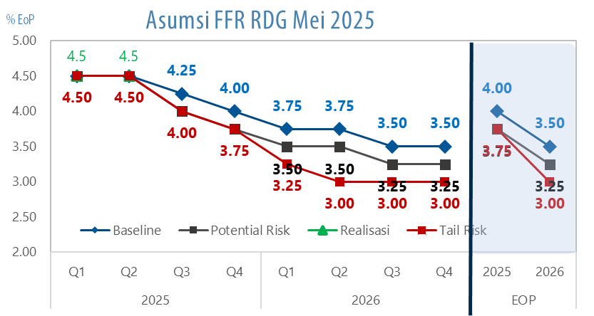
|
PROSPEK FFR SEJALAN PRAKIRAAN DGN TIMING YG SEDIKIT MUNDUR SEJALAN PROSPEK EKONOMI AS YG LEBIH TINGGI
|
|
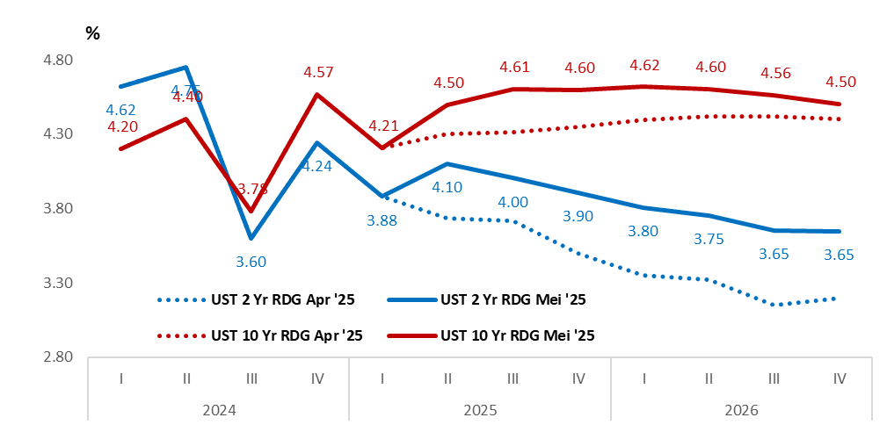
|
PROSPEK DXY TETAP RENDAH
|
|
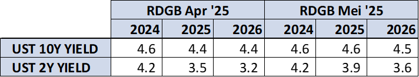
|
YIELD UST LEBIH TINGGI KARENA RISIKO FISKAL AS NAIK
|
|
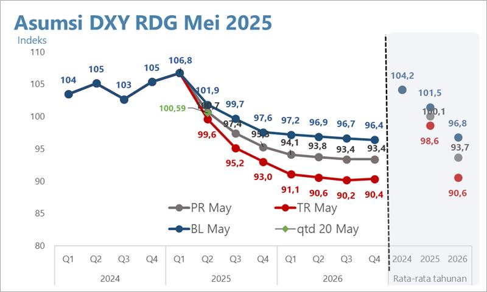
PERTUMBUHAN PDB GLOBAL 2025-2026 LEBIH BAIK DARI PRAKIRAAN RDGB APR’25 DAN DIIKUTI OLEH INFLASI YG LEBIH RENDAH
|
#2. PDB 2025 lebih rendah dipengaruhi oleh stimulus fiskal yg lebih kecil...
HASIL PEMBAHASAN DEWAN GUBERNUR
- PDB 2025 diprakirakan menjadi lebih rendah 4,85% akibat stimulus fiskal yg diprakirakan lebih kecil, di tengah perbaikan kondisi global.
- Belanja pemerintah turun shg mendekati angka PR Apr’25 akibat serapan tambahan anggaran MBG dan perumahan MBR.
- Investasi bangunan lebih rendah dari prakiraan dipengaruhi oleh asumsi MBR yang lebih rendah dari 440rb menjadi 250rb dan berdampak kepada konstruksi properti swasta.
- Impor menjadi lebih rendah sejalan dengan investasi bangunan yang lebih kecil.
|
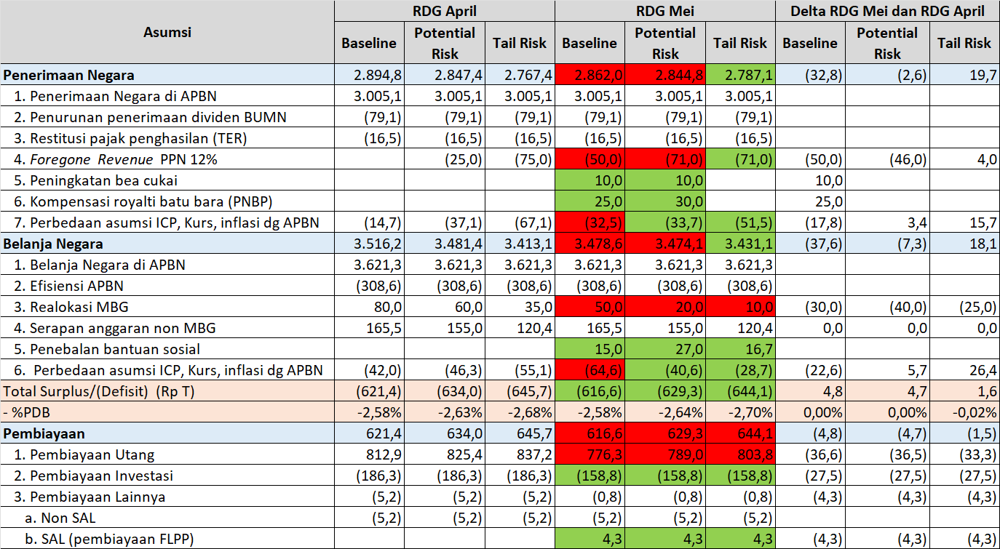
|
PDB 2025 DIPERKIRAKAN LEBIH RENDAH DR PRAKIRAAN SEIRING PENURUNAN PERMINTAAN DOMESTIK AKIBAT STIMULUS FISKAL YANG LEBIH RENDAH
REVISI KE BAWAH PDB DIPENGARUHI DAMPAK APBN 2025 YANG LEBIH RENDAH DARI PRAKIRAAN
|
|
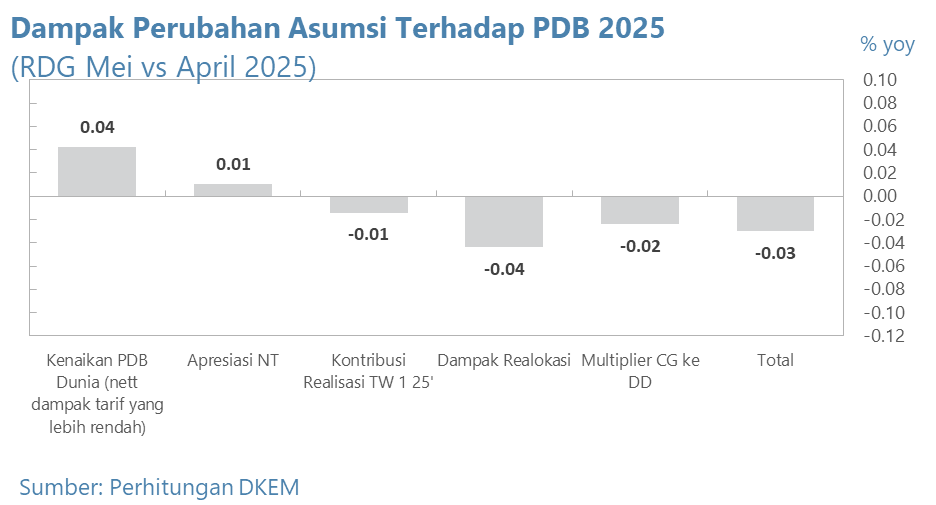
|
BELANJA NEGARA LEBIH RENDAH AKIBAT SERAPAN TAMBAHAN ANGGARAN MBG DAN PERUMAHAN MBR SHG MENDEKATI ANGKA PR PADA RDG APRIL 2025
|
Tindak Lanjut
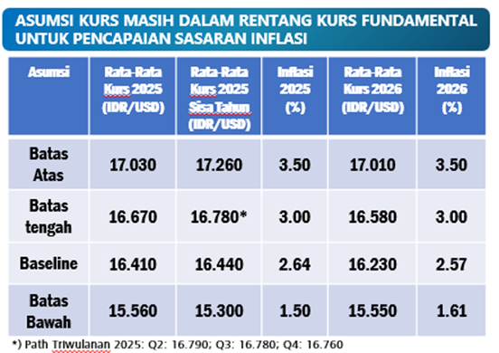
|
|
UPDATED
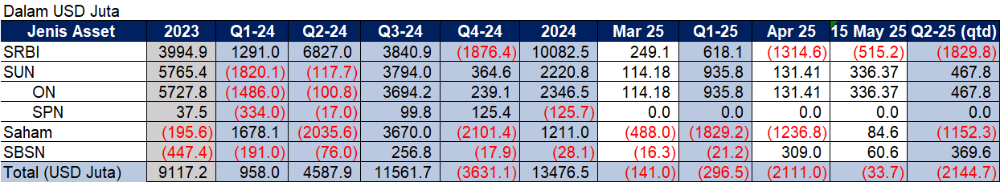
|
#3. Asumsi Rupiah lebih kuat, momentum penguatan perlu terus dijaga...
HASIL PEMBAHASAN DEWAN GUBERNUR
- Tekanan Rupiah mereda seiring konsistensi kebijakan stabilisasi Bank Indonesia dan berkurangnya ketidakpastian pasar keuangan dunia yg mendorong inflows terutama ke SBN dan saham di Mei’25, di tengah tetap tingginya permintaan valas residen khususnya korporasi dan individu.
- Kurs diasumsikan lebih apresiatif pada Tw.II-25 dan Tw.III-25 menjadi Rp16.550/USD dan Rp16.400/USD.
- Rata-rata kurs di sisa 2025 sebesar Rp16.780 dapat menjaga inflasi sekitar 3,0%.
- Cadev 2025 diprakirakan lebih tinggi menjadi $150,21 miliar atau 119,36% ARA Metric, dalam kisaran MRA – LRA, didorong oleh LCBSA.
|
PROSPEK PORTFOLIO INFLOWS DI 2025 RELATIF SEJALAN DGN PROYEKSI RDGB APR’25, NAMUN DENGAN SBN DAN SAHAM YG MEMBAIK, SEDANGKAN SRBI LEBIH RENDAH TERUTAMA AKIBAT REALISASI YANG RENDAH PADA TW-II 2025
PASAR VALAS MEI 2025 NET SUPPLY DIDORONG SURPLUS VALAS NR, DI TENGAH PERMINTAAN RESIDEN NAIK
SURPLUS NR PADA MEI 2025 DIDORONG INFLOWS PADA SBN DAN SAHAM
ASUMSI KURS MASIH DALAM RENTANG KURS FUNDAMENTAL MENCAPAI SASARAN INFLASI
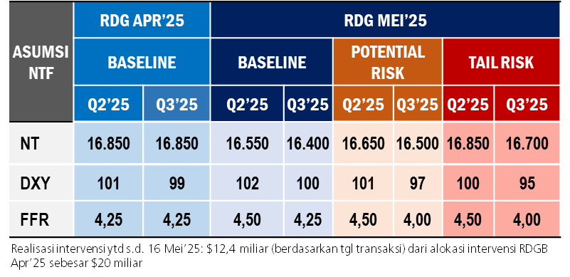
|
Tindak Lanjut
ASUMSI KURS TW II’25 DAN TW III’25 LEBIH APRESIATIF MENJADI RP16.550 & RP16.400
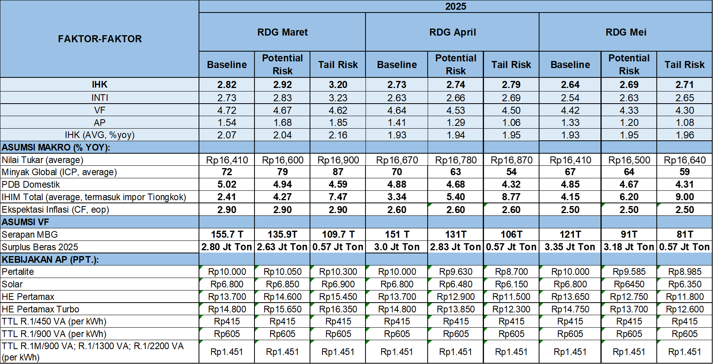
|
#4. Prospek inflasi IHK 2025 lebih rendah dari prakiraan…
HASIL PEMBAHASAN DEWAN GUBERNUR
- Prospek inflasi IHK 2025 sedikit lebih rendah menjadi 2,64% (yoy), disebabkan oleh:
- Inflasi inti lebih rendah disebabkan permintaan yg lebih rendah, depresiasi NT lebih terbatas, harga barang impor termasuk harga pangan global yg lebih rendah, dan ekspektasi yg turun.
- Inflasi VF lebih rendah didukung oleh masuknya panen raya yang mendorong produksi beras tetap tinggi serta anggaran dan realisasi MBG yang lebih rendah dari prakiraan.
|
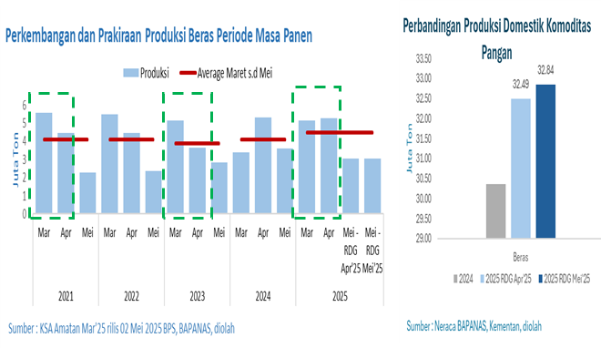
|
PROYEKSI INFLASI 2025 BASELINE DAN RISIKO
|
|
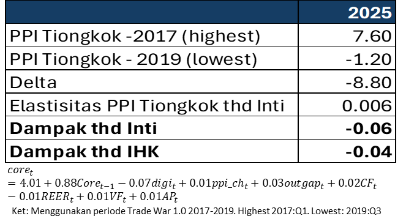
|
PRODUKSI BERAS TETAP TINGGI SEJALAN DENGAN MASIH BERLANGSUNGNYA PANEN RAYA
|
|
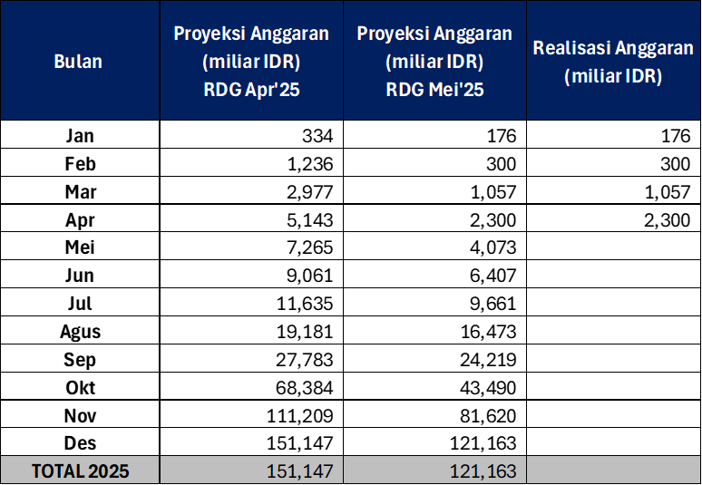
ANGGARAN MBG DIPRAKIRAKAN LEBIH RENDAH SEJALAN DENGAN REALISASI PADA APR’25 YANG MSH TERBATAS
POTENSI KENAIKAN IMPOR DARI TIONGKOK AKIBAT TRADE WAR DAPAT MENURUNKAN INFLASI INTI (IN: Dampak imported inflation)
|
#5. Bauran kebijakan moneter diperkuat untuk mendorong ekonomi, dg jaga stabilitas …
PENGENDALIAN MONETER EKSPANSIF
BI Rate dapat turun 75bps atau ekspansi moneter dg meningkatkan pembelian SBN dan/atau penurunan OMK sebesar 25 triliun dapat mendorong PDB 2025 naik 0,1ppt…
|
|
|
EKSPANSI LIKUIDITAS DAPAT DIKOMBINASIKAN DG PENURUNAN SUKU BUNGA UNTUK MENDORONG EKONOMI LEBIH TINGGI
Tambahan ekspansi likuiditas sekitar Rp25 T atau penurunan suku bunga sekitar 75 bps terindikasi dapat meningkatkan PDB 2025 sekitar 0,1ppt
|
|
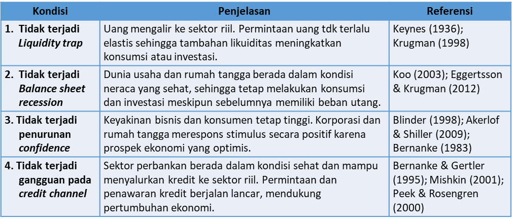
|
Interpretasi:
- Hasil granger causality menunjukkan 2 arah causality antara money (likuiditas: M0 & M2) follow the business (GDP RIIL) dan sebaliknya business follow the money.
- Sejalan dengan teori endogenous-money / monetarist-credit-channel dengan kebijakan terkait likuiditas dapat mendorong aktivitas, dan peningkatan aktivitas pada akhirnya akan meningkatkan permintaan uang/likuiditas.
|
EKSPANSI LIKUIDITAS DAPAT DITEMPUH UNTUK MENDORONG PERTUMBUHAN EKONOMI DG BEBERAPA PRASYARAT
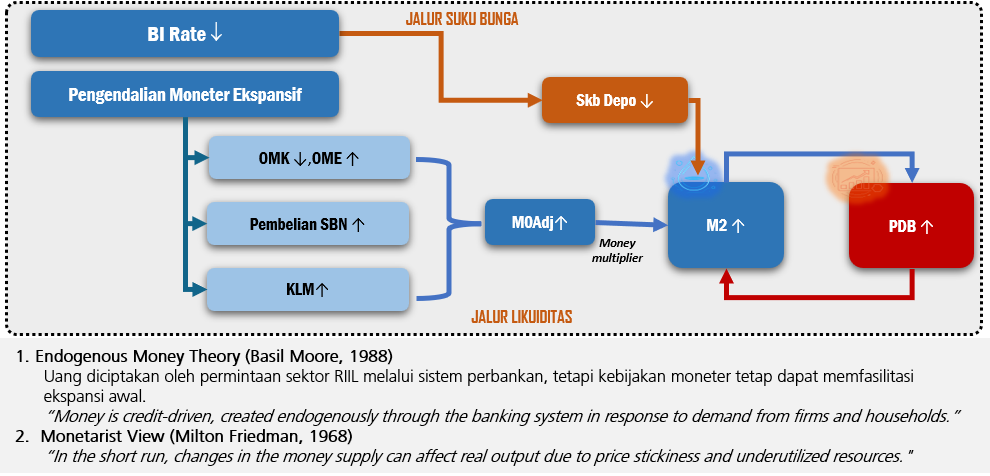
|
|
EKSPANSI MONETER UNTUK MENDUKUNG PERTUMBUHAN EKONOMI DAPAT DILAKUKAN MELALUI PEMBELIAN SBN DI PASAR SEKUNDER DAN PENURUNAN OMK
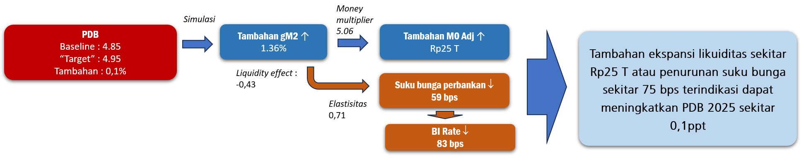
|
Ekspansi likuiditas ditempuh lebih banyak melalui pembelian SBN …
MONETARY POLICY MIX
Pembelian SBN diutamakan krn berbagai pertimbangan terkait dg menjaga likuiditas, mengurangi persaingan suku bunga, dan mengurangi preferensi bank menempatkan di SBN shg dapat mendorong pertumbuhan kredit…
- Tambahan ekspansi dilakukan melalui penambahan pembelian SBN, dengan pertimbangan:
- Mengurangi pembelian SBN oleh bank sehingga mendukung peningkatan realokasi aset bank ke kredit.
- Mengurangi pembelian SBN oleh investor domestik lainnya sehingga mengurangi persaingan suku bunga funding di perbankan.
- Tambahan ekspansi juga dilakukan melalui penurunan OMK, dengan pertimbangan:
- Penurunan penerbitan SRBI akan mendorong peningkatan ketersediaan likuiditas pasar uang jangka pendek dan menurunkan suku bunga.
- Penurunan penempatan pada OMK dan penurunan suku bunga mendorong realokasi aset bank termasuk meningkatkan kredit.
- Tetap menjaga keseimbangan imbal hasil SBN shg tetap dapat menarik inflows.
Tindak Lanjut
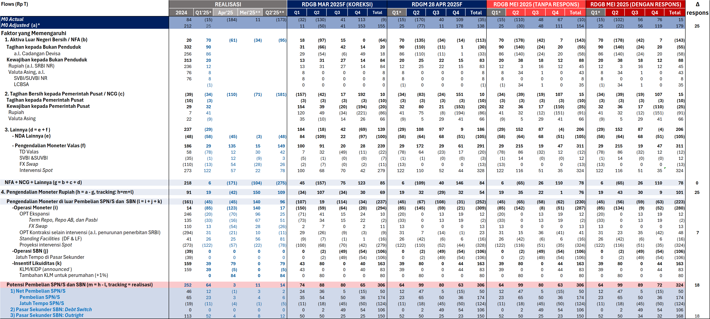
* Data realisasi ** Per 19 Mei 2025
Catatan: - Koreksi RDGB Maret berupa update realisasi posisi FX Swap 2024 yg berdampak pada flows FX swap.
- Terdapat penyesuaian M0 Adjusted dengan menggunakan model Kartal terbaru.
- Pencatatan realisasi cadev dilakukan dengan realisasi cadev ($) * kurs jisdor EoP.
|